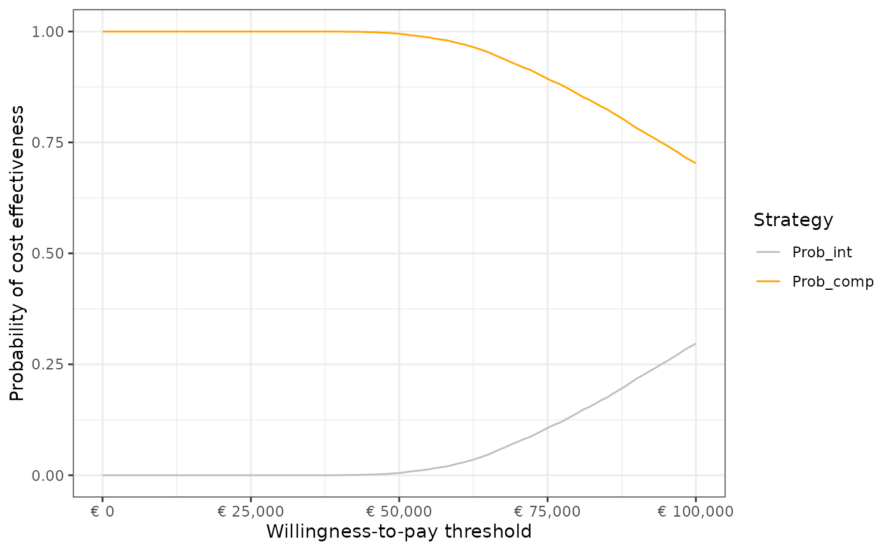

Example workflow using the `pacheck` R package
X. Pouwels
2023-09-26
Example_workflow.RmdIntroduction
This article describes an example workflow for the use of the
pacheck package.
This vignette is still in development.
1. Upload of original health economic model inputs and outputs
df_pa <- calculate_nb(df = df_pa,
e_int = "t_qaly_d_int",
e_comp = "t_qaly_d_comp",
c_int = "t_costs_d_int",
c_comp = "t_costs_d_comp",
wtp = 80000)# calculate net benefits2. Investigate model inputs and outputs
a. Summary statistics of (user-selected) model inputs and outputs
To examine whether cost inputs are always positive for instance
df <- generate_sum_stats(df_pa)
kable(df)| Parameter | Mean | SD | Percentile_2.5th | Percentile_97.5th | Minimum | Maximum | Median | Skewness | Kurtosis |
|---|---|---|---|---|---|---|---|---|---|
| p_pfspd | 0.150 | 0.035 | 0.088 | 0.226 | 0.049 | 0.316 | 0.147 | 0.390 | 3.167 |
| p_pfsd | 0.100 | 0.030 | 0.049 | 0.165 | 0.023 | 0.244 | 0.097 | 0.512 | 3.324 |
| p_pdd | 0.201 | 0.040 | 0.129 | 0.283 | 0.073 | 0.366 | 0.199 | 0.281 | 3.043 |
| p_dd | 1.000 | 0.000 | 1.000 | 1.000 | 1.000 | 1.000 | 1.000 | NaN | NaN |
| p_ae | 0.050 | 0.022 | 0.016 | 0.099 | 0.003 | 0.150 | 0.047 | 0.773 | 3.697 |
| rr | 0.752 | 0.067 | 0.631 | 0.895 | 0.541 | 1.053 | 0.748 | 0.337 | 3.220 |
| u_pfs | 0.750 | 0.070 | 0.601 | 0.872 | 0.452 | 0.938 | 0.754 | -0.344 | 2.973 |
| u_pd | 0.551 | 0.101 | 0.351 | 0.743 | 0.189 | 0.880 | 0.553 | -0.074 | 2.759 |
| u_d | 0.000 | 0.000 | 0.000 | 0.000 | 0.000 | 0.000 | 0.000 | NaN | NaN |
| u_ae | 0.150 | 0.050 | 0.067 | 0.260 | 0.027 | 0.381 | 0.145 | 0.536 | 3.270 |
| c_pfs | 1001.901 | 198.469 | 618.721 | 1394.938 | 251.129 | 1683.865 | 999.615 | 0.027 | 2.955 |
| c_pd | 2001.849 | 401.590 | 1206.941 | 2797.130 | 507.164 | 3473.235 | 2001.862 | 0.023 | 3.007 |
| c_d | 0.000 | 0.000 | 0.000 | 0.000 | 0.000 | 0.000 | 0.000 | NaN | NaN |
| c_thx | 9998.458 | 98.509 | 9803.697 | 10189.988 | 9645.508 | 10432.360 | 9998.554 | 0.006 | 2.999 |
| c_ae | 500.147 | 98.550 | 326.356 | 713.320 | 202.776 | 973.505 | 494.154 | 0.404 | 3.300 |
| t_qaly_comp | 4.045 | 0.812 | 2.685 | 5.835 | 1.857 | 8.361 | 3.965 | 0.608 | 3.696 |
| t_qaly_int | 4.361 | 0.904 | 2.848 | 6.353 | 1.997 | 8.929 | 4.272 | 0.626 | 3.727 |
| t_qaly_d_comp | 3.712 | 0.708 | 2.507 | 5.254 | 1.766 | 7.250 | 3.648 | 0.549 | 3.558 |
| t_qaly_d_int | 3.981 | 0.783 | 2.653 | 5.680 | 1.884 | 7.814 | 3.912 | 0.565 | 3.588 |
| t_costs_comp | 9308.357 | 2241.029 | 5552.338 | 14253.916 | 3544.847 | 24343.506 | 9082.400 | 0.665 | 3.984 |
| t_costs_int | 47324.248 | 10127.477 | 30892.820 | 70045.473 | 22968.730 | 105110.970 | 46107.344 | 0.732 | 3.970 |
| t_costs_d_comp | 7245.761 | 1569.069 | 4537.692 | 10630.767 | 2839.705 | 16238.254 | 7122.288 | 0.507 | 3.553 |
| t_costs_d_int | 38904.167 | 7229.537 | 26678.880 | 54663.960 | 20482.666 | 76512.645 | 38192.360 | 0.564 | 3.548 |
| t_ly_comp | 6.210 | 1.075 | 4.363 | 8.599 | 3.237 | 12.038 | 6.116 | 0.550 | 3.596 |
| t_ly_int | 6.551 | 1.191 | 4.521 | 9.189 | 3.319 | 12.610 | 6.453 | 0.532 | 3.517 |
| t_ly_d_comp | 5.674 | 0.918 | 4.070 | 7.682 | 3.063 | 10.407 | 5.605 | 0.481 | 3.457 |
| t_ly_d_int | 5.958 | 1.012 | 4.202 | 8.171 | 3.130 | 10.927 | 5.884 | 0.465 | 3.392 |
| t_ly_pfs_d_comp | 2.933 | 0.659 | 1.871 | 4.453 | 1.387 | 6.718 | 2.858 | 0.727 | 3.915 |
| t_ly_pfs_d_int | 3.536 | 0.791 | 2.254 | 5.327 | 1.610 | 7.865 | 3.441 | 0.711 | 3.874 |
| t_ly_pd_d_comp | 2.741 | 0.682 | 1.610 | 4.282 | 0.901 | 7.703 | 2.667 | 0.703 | 4.161 |
| t_ly_pd_d_int | 2.422 | 0.650 | 1.351 | 3.879 | 0.765 | 7.287 | 2.350 | 0.710 | 4.189 |
| t_qaly_pfs_d_comp | 2.200 | 0.539 | 1.342 | 3.437 | 0.924 | 5.179 | 2.136 | 0.779 | 4.105 |
| t_qaly_pfs_d_int | 2.653 | 0.647 | 1.615 | 4.127 | 1.018 | 6.195 | 2.574 | 0.769 | 4.061 |
| t_qaly_pd_d_comp | 1.512 | 0.476 | 0.753 | 2.606 | 0.411 | 4.629 | 1.452 | 0.798 | 4.150 |
| t_qaly_pd_d_int | 1.336 | 0.443 | 0.636 | 2.359 | 0.311 | 4.062 | 1.275 | 0.835 | 4.232 |
| t_costs_pfs_d_comp | 2671.516 | 775.772 | 1398.436 | 4432.004 | 521.298 | 7716.981 | 2579.053 | 0.677 | 3.842 |
| t_costs_pfs_d_int | 34887.841 | 7196.717 | 22888.074 | 50881.264 | 17118.706 | 73283.077 | 34141.115 | 0.607 | 3.592 |
| t_costs_pd_d_comp | 4574.245 | 1424.259 | 2228.701 | 7800.942 | 896.710 | 13727.249 | 4405.554 | 0.711 | 3.935 |
| t_costs_pd_d_int | 3991.423 | 1308.219 | 1879.682 | 6956.242 | 761.653 | 12828.864 | 3821.068 | 0.767 | 4.114 |
| t_qaly_ae_int | 0.007 | 0.004 | 0.002 | 0.018 | 0.000 | 0.040 | 0.007 | 1.344 | 6.133 |
| t_costs_ae_int | 24.903 | 12.074 | 7.479 | 53.808 | 1.374 | 91.560 | 22.939 | 1.072 | 4.788 |
| inc_ly | 0.284 | 0.189 | 0.007 | 0.730 | -0.299 | 1.518 | 0.256 | 0.986 | 4.701 |
| inc_qaly | 0.269 | 0.158 | 0.033 | 0.646 | -0.104 | 1.354 | 0.245 | 1.022 | 4.804 |
| inc_costs | 31658.406 | 6586.504 | 20654.329 | 46277.308 | 14918.827 | 65754.848 | 30921.151 | 0.615 | 3.613 |
| NMB_int | 279582.456 | 56982.312 | 183155.896 | 403387.760 | 127937.329 | 568439.502 | 274622.922 | 0.564 | 3.579 |
| NMB_comp | 289739.318 | 55800.494 | 194916.374 | 411412.957 | 137320.155 | 570174.142 | 284875.452 | 0.552 | 3.567 |
| iNMB | -10156.862 | 9812.973 | -26529.652 | 12070.411 | -42404.626 | 52128.478 | -11253.077 | 0.764 | 4.408 |
| NHB_int | 3.495 | 0.712 | 2.289 | 5.042 | 1.599 | 7.105 | 3.433 | 0.564 | 3.579 |
| NHB_comp | 3.622 | 0.698 | 2.436 | 5.143 | 1.717 | 7.127 | 3.561 | 0.552 | 3.567 |
| iNHB | -0.127 | 0.123 | -0.332 | 0.151 | -0.530 | 0.652 | -0.141 | 0.764 | 4.408 |
rm(df)b. Correlation matrix inputs (and outputs)
Question Karel:
- Karel: kan dit met kleuren om de sterke van de associatie te
onderbouwen?
generate_cor(df_pa)## Warning in cor(df): the standard deviation is zero## p_pfspd p_pfsd p_pdd p_dd p_ae
## p_pfspd 1.000000000 -0.139033305 -0.010495755 NA -3.024284e-02
## p_pfsd -0.139033305 1.000000000 -0.010816151 NA -3.663264e-03
## p_pdd -0.010495755 -0.010816151 1.000000000 NA 1.701983e-03
## p_dd NA NA NA 1 NA
## p_ae -0.030242838 -0.003663264 0.001701983 NA 1.000000e+00
## rr 0.005555683 0.006708217 -0.005797883 NA 7.691566e-03
## u_pfs -0.003437065 0.009789630 -0.016799074 NA -1.148453e-02
## u_pd -0.008489360 -0.010290774 -0.014401764 NA 4.285824e-03
## u_d NA NA NA NA NA
## u_ae 0.004214310 -0.007845934 0.006115386 NA -2.072832e-02
## c_pfs -0.007240729 0.008922006 0.007699470 NA 1.160183e-02
## c_pd -0.006491644 -0.001989455 0.004018725 NA -2.972565e-03
## c_d NA NA NA NA NA
## c_thx -0.009512600 0.003227603 -0.006967529 NA -6.331375e-03
## c_ae -0.004787715 -0.020918854 0.008406508 NA -1.854275e-03
## t_qaly_comp -0.249129434 -0.644894524 -0.409465972 NA 9.026731e-03
## t_qaly_int -0.223416510 -0.719044362 -0.323450439 NA 4.623426e-03
## t_qaly_d_comp -0.245500974 -0.650125556 -0.389887645 NA 8.905463e-03
## t_qaly_d_int -0.217456717 -0.721315789 -0.308303151 NA 3.810515e-03
## t_costs_comp 0.072402818 -0.524795343 -0.526957959 NA -3.597241e-05
## t_costs_int -0.509139564 -0.703054192 -0.087255808 NA 2.183282e-02
## t_costs_d_comp 0.116309363 -0.524992861 -0.466695171 NA -3.802565e-04
## t_costs_d_int -0.512272727 -0.709937788 -0.071935067 NA 2.247691e-02
## t_ly_comp -0.161625810 -0.743833380 -0.548875028 NA 9.186622e-03
## t_ly_int -0.141333480 -0.815594017 -0.434782863 NA 9.078385e-03
## t_ly_d_comp -0.154183693 -0.762245774 -0.531983204 NA 9.245782e-03
## t_ly_d_int -0.132012632 -0.829802983 -0.420493003 NA 9.011750e-03
## t_ly_pfs_d_comp -0.709945440 -0.562256166 0.016256423 NA 2.799160e-02
## t_ly_pfs_d_int -0.595708606 -0.643733642 0.017622636 NA 2.328283e-02
## t_ly_pd_d_comp 0.478324088 -0.483203573 -0.732087372 NA -1.459499e-02
## t_ly_pd_d_int 0.518747045 -0.509285887 -0.676112095 NA -1.427727e-02
## t_qaly_pfs_d_comp -0.654500671 -0.512439160 0.006902301 NA 2.147308e-02
## t_qaly_pfs_d_int -0.549222875 -0.586905726 0.008112931 NA 1.716692e-02
## t_qaly_pd_d_comp 0.375702865 -0.386783403 -0.587595960 NA -1.106072e-02
## t_qaly_pd_d_int 0.418231668 -0.417503190 -0.556967617 NA -1.116417e-02
## t_costs_pfs_d_comp -0.517922376 -0.398979866 0.017393108 NA 2.718166e-02
## t_costs_pfs_d_int -0.596606220 -0.642828427 0.018051103 NA 2.390793e-02
## t_costs_pd_d_comp 0.410239692 -0.361052830 -0.523619933 NA -1.522437e-02
## t_costs_pd_d_int 0.451340245 -0.386885995 -0.496859767 NA -1.556586e-02
## t_qaly_ae_int -0.021395840 -0.008030030 0.005575349 NA 7.638387e-01
## t_costs_ae_int -0.028186016 -0.011196075 0.002954918 NA 8.947127e-01
## inc_ly 0.042095811 -0.741342725 0.332775995 NA 3.346499e-03
## inc_qaly 0.022910723 -0.658263698 0.219492682 NA -2.098542e-02
## inc_costs -0.589993133 -0.654181852 0.032220406 NA 2.476189e-02
## NMB_int -0.173914077 -0.702398131 -0.329589215 NA 1.334684e-03
## NMB_comp -0.252438721 -0.645074499 -0.382588528 NA 9.049183e-03
## iNMB 0.425577343 -0.410557880 0.261681483 NA -4.370699e-02
## NHB_int -0.173914077 -0.702398131 -0.329589215 NA 1.334684e-03
## NHB_comp -0.252438721 -0.645074499 -0.382588528 NA 9.049183e-03
## iNHB 0.425577343 -0.410557880 0.261681483 NA -4.370699e-02
## rr u_pfs u_pd u_d u_ae
## p_pfspd 0.0055556829 -0.0034370651 -0.008489360 NA 0.0042143104
## p_pfsd 0.0067082170 0.0097896297 -0.010290774 NA -0.0078459341
## p_pdd -0.0057978835 -0.0167990741 -0.014401764 NA 0.0061153859
## p_dd NA NA NA NA NA
## p_ae 0.0076915659 -0.0114845290 0.004285824 NA -0.0207283208
## rr 1.0000000000 -0.0042278034 -0.005801696 NA -0.0230641212
## u_pfs -0.0042278034 1.0000000000 0.021242759 NA 0.0135154016
## u_pd -0.0058016960 0.0212427591 1.000000000 NA 0.0078137622
## u_d NA NA NA 1 NA
## u_ae -0.0230641212 0.0135154016 0.007813762 NA 1.0000000000
## c_pfs -0.0003802568 0.0034331149 -0.013308394 NA -0.0095889440
## c_pd -0.0129604287 -0.0044320841 0.003942809 NA 0.0081048934
## c_d NA NA NA NA NA
## c_thx 0.0025409157 -0.0005669849 0.002582883 NA 0.0087207713
## c_ae -0.0148876228 -0.0143081358 0.019011830 NA 0.0003062855
## t_qaly_comp -0.0104607022 0.2847749814 0.410329142 NA 0.0060188958
## t_qaly_int -0.1222715413 0.3063443450 0.333308547 NA 0.0069789390
## t_qaly_d_comp -0.0106044723 0.3051658443 0.417231300 NA 0.0065257281
## t_qaly_d_int -0.1203932067 0.3281264437 0.338581898 NA 0.0070152853
## t_costs_comp -0.0080629394 0.0041988641 0.014221858 NA 0.0025205076
## t_costs_int -0.2208200079 -0.0001846684 0.018160598 NA 0.0089088253
## t_costs_d_comp -0.0080164419 0.0021469688 0.012035883 NA 0.0033489268
## t_costs_d_int -0.2224808170 -0.0012710841 0.017484034 NA 0.0091419802
## t_ly_comp -0.0071336061 0.0064546005 0.021068311 NA -0.0007597400
## t_ly_int -0.0974777287 0.0037668105 0.020117524 NA 0.0028280916
## t_ly_d_comp -0.0071752851 0.0055472255 0.020937946 NA -0.0004326849
## t_ly_d_int -0.0949669147 0.0029410233 0.019926188 NA 0.0030739728
## t_ly_pfs_d_comp -0.0106464373 -0.0004380891 0.017015306 NA 0.0035062868
## t_ly_pfs_d_int -0.2476888110 -0.0008526912 0.017018478 NA 0.0091352539
## t_ly_pd_d_comp 0.0006242195 0.0078932997 0.011755265 NA -0.0039704471
## t_ly_pd_d_int 0.1532903637 0.0056157536 0.010332369 NA -0.0063209525
## t_qaly_pfs_d_comp -0.0125463028 0.3833317662 0.024688100 NA 0.0078832951
## t_qaly_pfs_d_int -0.2293238499 0.3846774267 0.024563732 NA 0.0134075337
## t_qaly_pd_d_comp -0.0015692807 0.0199359727 0.592502840 NA 0.0007816481
## t_qaly_pd_d_int 0.1223329075 0.0178180478 0.562837475 NA -0.0017737143
## t_costs_pfs_d_comp -0.0072158573 0.0020768359 0.003403604 NA -0.0006867819
## t_costs_pfs_d_int -0.2474883446 -0.0011011723 0.015662313 NA 0.0089858989
## t_costs_pd_d_comp -0.0049011391 0.0012340391 0.011405732 NA 0.0040635071
## t_costs_pd_d_int 0.1320014993 -0.0008274771 0.010349008 NA 0.0012593845
## t_qaly_ae_int -0.0050667196 -0.0003522583 0.005237896 NA 0.5756756227
## t_costs_ae_int -0.0013694561 -0.0150741011 0.012047203 NA -0.0185726440
## inc_ly -0.4740579087 -0.0112066928 0.004996597 NA 0.0185773590
## inc_qaly -0.5476431139 0.2573068852 -0.192098858 NA 0.0054952003
## inc_costs -0.2422916565 -0.0019066401 0.016323734 NA 0.0092367038
## NMB_int -0.1040425630 0.3606558956 0.369763208 NA 0.0065474377
## NMB_comp -0.0105374619 0.3096639394 0.423125322 NA 0.0065290379
## iNMB -0.5442377056 0.3333959783 -0.258906190 NA 0.0008931641
## NHB_int -0.1040425630 0.3606558956 0.369763208 NA 0.0065474377
## NHB_comp -0.0105374619 0.3096639394 0.423125322 NA 0.0065290379
## iNHB -0.5442377056 0.3333959783 -0.258906190 NA 0.0008931641
## c_pfs c_pd c_d c_thx c_ae
## p_pfspd -0.0072407289 -6.491644e-03 NA -0.0095126002 -0.0047877153
## p_pfsd 0.0089220058 -1.989455e-03 NA 0.0032276026 -0.0209188544
## p_pdd 0.0076994700 4.018725e-03 NA -0.0069675286 0.0084065078
## p_dd NA NA NA NA NA
## p_ae 0.0116018262 -2.972565e-03 NA -0.0063313753 -0.0018542748
## rr -0.0003802568 -1.296043e-02 NA 0.0025409157 -0.0148876228
## u_pfs 0.0034331149 -4.432084e-03 NA -0.0005669849 -0.0143081358
## u_pd -0.0133083940 3.942809e-03 NA 0.0025828832 0.0190118301
## u_d NA NA NA NA NA
## u_ae -0.0095889440 8.104893e-03 NA 0.0087207713 0.0003062855
## c_pfs 1.0000000000 -3.784204e-03 NA -0.0050909619 -0.0080850947
## c_pd -0.0037842037 1.000000e+00 NA 0.0048944545 0.0043422450
## c_d NA NA 1 NA NA
## c_thx -0.0050909619 4.894455e-03 NA 1.0000000000 0.0020771004
## c_ae -0.0080850947 4.342245e-03 NA 0.0020771004 1.0000000000
## t_qaly_comp -0.0104862686 -1.880100e-03 NA 0.0074977060 0.0137953135
## t_qaly_int -0.0112863610 -1.544393e-03 NA 0.0055738755 0.0164282308
## t_qaly_d_comp -0.0103328331 -1.700198e-03 NA 0.0071735807 0.0140781774
## t_qaly_d_int -0.0111028370 -1.333459e-03 NA 0.0052731230 0.0164898298
## t_costs_comp 0.2635015199 5.486358e-01 NA 0.0060161496 0.0060764012
## t_costs_int 0.0680191883 1.109267e-01 NA 0.0435605924 0.0196733549
## t_costs_d_comp 0.3244516667 5.803968e-01 NA 0.0048001642 0.0061741806
## t_costs_d_int 0.0810140321 1.133882e-01 NA 0.0493143663 0.0205190003
## t_ly_comp -0.0102500476 -3.996077e-03 NA 0.0078777697 0.0101315805
## t_ly_int -0.0111867205 -3.272477e-03 NA 0.0060221635 0.0143331190
## t_ly_d_comp -0.0102285122 -3.774215e-03 NA 0.0075143392 0.0108421201
## t_ly_d_int -0.0111278886 -3.014764e-03 NA 0.0056701127 0.0148646997
## t_ly_pfs_d_comp -0.0008634609 2.342358e-03 NA 0.0079975038 0.0150801585
## t_ly_pfs_d_int -0.0036208336 3.642237e-03 NA 0.0061117234 0.0200928418
## t_ly_pd_d_comp -0.0129396629 -7.345635e-03 NA 0.0023917651 0.0000297480
## t_ly_pd_d_int -0.0129232078 -9.122194e-03 NA 0.0013972198 -0.0012860288
## t_qaly_pfs_d_comp 0.0006896915 8.130601e-05 NA 0.0071248409 0.0090326149
## t_qaly_pfs_d_int -0.0023807954 1.373561e-03 NA 0.0051313266 0.0138616519
## t_qaly_pd_d_comp -0.0161460818 -2.620310e-03 NA 0.0026034719 0.0107117232
## t_qaly_pd_d_int -0.0161079734 -4.325842e-03 NA 0.0018436046 0.0088790778
## t_costs_pfs_d_comp 0.6816126278 3.801856e-06 NA 0.0016889697 0.0052202124
## t_costs_pfs_d_int 0.0838489930 3.821088e-03 NA 0.0489235661 0.0196049732
## t_costs_pd_d_comp -0.0138241597 6.394063e-01 NA 0.0043682617 0.0039585651
## t_costs_pd_d_int -0.0136432856 6.056054e-01 NA 0.0034311872 0.0017716105
## t_qaly_ae_int 0.0046730992 4.264632e-03 NA 0.0022570993 -0.0014572887
## t_costs_ae_int 0.0086834700 -1.628790e-03 NA -0.0047865527 0.4086339889
## inc_ly -0.0099096010 2.191952e-03 NA -0.0061443215 0.0269526103
## inc_qaly -0.0086755892 1.011375e-03 NA -0.0060124393 0.0185547912
## inc_costs 0.0116308741 -1.380677e-02 NA 0.0529853546 0.0210514040
## NMB_int -0.0224766035 -1.585094e-02 NA -0.0004633864 0.0155131623
## NMB_comp -0.0196105263 -1.804593e-02 NA 0.0071457601 0.0141148591
## iNMB -0.0190046136 1.057258e-02 NA -0.0433244595 0.0098196274
## NHB_int -0.0224766035 -1.585094e-02 NA -0.0004633864 0.0155131623
## NHB_comp -0.0196105263 -1.804593e-02 NA 0.0071457601 0.0141148591
## iNHB -0.0190046136 1.057258e-02 NA -0.0433244595 0.0098196274
## t_qaly_comp t_qaly_int t_qaly_d_comp t_qaly_d_int
## p_pfspd -0.249129434 -0.223416510 -0.245500974 -0.217456717
## p_pfsd -0.644894524 -0.719044362 -0.650125556 -0.721315789
## p_pdd -0.409465972 -0.323450439 -0.389887645 -0.308303151
## p_dd NA NA NA NA
## p_ae 0.009026731 0.004623426 0.008905463 0.003810515
## rr -0.010460702 -0.122271541 -0.010604472 -0.120393207
## u_pfs 0.284774981 0.306344345 0.305165844 0.328126444
## u_pd 0.410329142 0.333308547 0.417231300 0.338581898
## u_d NA NA NA NA
## u_ae 0.006018896 0.006978939 0.006525728 0.007015285
## c_pfs -0.010486269 -0.011286361 -0.010332833 -0.011102837
## c_pd -0.001880100 -0.001544393 -0.001700198 -0.001333459
## c_d NA NA NA NA
## c_thx 0.007497706 0.005573876 0.007173581 0.005273123
## c_ae 0.013795313 0.016428231 0.014078177 0.016489830
## t_qaly_comp 1.000000000 0.981540140 0.999408651 0.979550452
## t_qaly_int 0.981540140 1.000000000 0.983305375 0.999467984
## t_qaly_d_comp 0.999408651 0.983305375 1.000000000 0.982400906
## t_qaly_d_int 0.979550452 0.999467984 0.982400906 1.000000000
## t_costs_comp 0.598435679 0.589810000 0.588149187 0.580473676
## t_costs_int 0.750768141 0.812833392 0.748278763 0.805969518
## t_costs_d_comp 0.549501061 0.547385885 0.541168761 0.539805601
## t_costs_d_int 0.743112321 0.806482160 0.741355778 0.800346396
## t_ly_comp 0.861102388 0.863050633 0.849727701 0.851144037
## t_ly_int 0.854413354 0.885941795 0.845965174 0.875793106
## t_ly_d_comp 0.861226313 0.866300462 0.850530664 0.854936272
## t_ly_d_int 0.851883156 0.885501902 0.844037966 0.875882194
## t_ly_pfs_d_comp 0.672498972 0.702622951 0.671168901 0.697024897
## t_ly_pfs_d_int 0.689651148 0.758252439 0.689136462 0.752782745
## t_ly_pd_d_comp 0.509976053 0.487703143 0.496858175 0.477808728
## t_ly_pd_d_int 0.487835425 0.456770164 0.476246644 0.448443027
## t_qaly_pfs_d_comp 0.733729850 0.769885818 0.740413173 0.773127377
## t_qaly_pfs_d_int 0.749376254 0.821278050 0.756834925 0.824676125
## t_qaly_pd_d_comp 0.655725177 0.590856749 0.649040236 0.585842899
## t_qaly_pd_d_int 0.636623665 0.566695740 0.630761664 0.562662453
## t_costs_pfs_d_comp 0.474585693 0.495561165 0.473931987 0.491897218
## t_costs_pfs_d_int 0.685056758 0.753024687 0.684744802 0.747837590
## t_costs_pd_d_comp 0.346871516 0.333116253 0.338048099 0.326760945
## t_costs_pd_d_int 0.337885631 0.314207878 0.329894530 0.308841581
## t_qaly_ae_int 0.010557378 0.007554518 0.010779190 0.006905744
## t_costs_ae_int 0.014043080 0.011086715 0.014057957 0.010393859
## inc_ly 0.378475855 0.533975197 0.388429693 0.537669288
## inc_qaly 0.372857802 0.543306128 0.384302420 0.549979880
## inc_costs 0.684756714 0.754817168 0.684813643 0.749888188
## NMB_int 0.981897509 0.995739870 0.985252004 0.997102832
## NMB_comp 0.998885917 0.982601572 0.999720397 0.981896744
## iNMB 0.021651174 0.194630777 0.036384987 0.206553204
## NHB_int 0.981897509 0.995739870 0.985252004 0.997102832
## NHB_comp 0.998885917 0.982601572 0.999720397 0.981896744
## iNHB 0.021651174 0.194630777 0.036384987 0.206553204
## t_costs_comp t_costs_int t_costs_d_comp t_costs_d_int
## p_pfspd 7.240282e-02 -0.5091395641 0.1163093629 -0.512272727
## p_pfsd -5.247953e-01 -0.7030541918 -0.5249928607 -0.709937788
## p_pdd -5.269580e-01 -0.0872558084 -0.4666951715 -0.071935067
## p_dd NA NA NA NA
## p_ae -3.597241e-05 0.0218328198 -0.0003802565 0.022476909
## rr -8.062939e-03 -0.2208200079 -0.0080164419 -0.222480817
## u_pfs 4.198864e-03 -0.0001846684 0.0021469688 -0.001271084
## u_pd 1.422186e-02 0.0181605977 0.0120358828 0.017484034
## u_d NA NA NA NA
## u_ae 2.520508e-03 0.0089088253 0.0033489268 0.009141980
## c_pfs 2.635015e-01 0.0680191883 0.3244516667 0.081014032
## c_pd 5.486358e-01 0.1109267282 0.5803967986 0.113388232
## c_d NA NA NA NA
## c_thx 6.016150e-03 0.0435605924 0.0048001642 0.049314366
## c_ae 6.076401e-03 0.0196733549 0.0061741806 0.020519000
## t_qaly_comp 5.984357e-01 0.7507681414 0.5495010607 0.743112321
## t_qaly_int 5.898100e-01 0.8128333923 0.5473858847 0.806482160
## t_qaly_d_comp 5.881492e-01 0.7482787629 0.5411687615 0.741355778
## t_qaly_d_int 5.804737e-01 0.8059695185 0.5398056014 0.800346396
## t_costs_comp 1.000000e+00 0.5325578405 0.9936974249 0.528401833
## t_costs_int 5.325578e-01 1.0000000000 0.5016446400 0.999035773
## t_costs_d_comp 9.936974e-01 0.5016446400 1.0000000000 0.500110427
## t_costs_d_int 5.284018e-01 0.9990357733 0.5001104271 1.000000000
## t_ly_comp 7.319419e-01 0.7891016859 0.6766928284 0.779669656
## t_ly_int 7.059997e-01 0.8450807290 0.6590225085 0.837406997
## t_ly_d_comp 7.300733e-01 0.7952336162 0.6767457619 0.786540533
## t_ly_d_int 7.033950e-01 0.8458330910 0.6582433826 0.838910691
## t_ly_pfs_d_comp 3.088077e-01 0.9315528141 0.2696224941 0.931360950
## t_ly_pfs_d_int 3.531060e-01 0.9785483800 0.3185562098 0.978438096
## t_ly_pd_d_comp 6.847621e-01 0.1708102803 0.6508108326 0.159289361
## t_ly_pd_d_int 6.658307e-01 0.1271641709 0.6375388448 0.116520439
## t_qaly_pfs_d_comp 2.857432e-01 0.8569173510 0.2488181658 0.856203073
## t_qaly_pfs_d_int 3.262447e-01 0.8993844224 0.2935596240 0.898721828
## t_qaly_pd_d_comp 5.511999e-01 0.1428556919 0.5231299301 0.133369276
## t_qaly_pd_d_int 5.494924e-01 0.1104948135 0.5253680045 0.101526608
## t_costs_pfs_d_comp 4.108102e-01 0.7165056229 0.4252605753 0.725974010
## t_costs_pfs_d_int 3.760350e-01 0.9814106106 0.3472837212 0.983566034
## t_costs_pd_d_comp 8.709689e-01 0.1623791223 0.8700413662 0.155531629
## t_costs_pd_d_int 8.514253e-01 0.1217710029 0.8532471533 0.115233885
## t_qaly_ae_int 3.065113e-03 0.0228408501 0.0033046830 0.023501319
## t_costs_ae_int 2.634632e-03 0.0271685645 0.0024455215 0.028073273
## inc_ly 2.203125e-01 0.6668786695 0.2375925986 0.672042318
## inc_qaly 2.392506e-01 0.6377992009 0.2483088922 0.640961221
## inc_costs 3.432656e-01 0.9770662808 0.3107107467 0.978490132
## NMB_int 5.706947e-01 0.7587237363 0.5296042881 0.752423583
## NMB_comp 5.689927e-01 0.7453504209 0.5211332888 0.738367164
## iNMB 7.840909e-02 0.1674223233 0.1119519707 0.170547974
## NHB_int 5.706947e-01 0.7587237363 0.5296042881 0.752423583
## NHB_comp 5.689927e-01 0.7453504209 0.5211332888 0.738367164
## iNHB 7.840909e-02 0.1674223233 0.1119519707 0.170547974
## t_ly_comp t_ly_int t_ly_d_comp t_ly_d_int
## p_pfspd -0.161625810 -0.141333480 -0.1541836929 -0.132012632
## p_pfsd -0.743833380 -0.815594017 -0.7622457742 -0.829802983
## p_pdd -0.548875028 -0.434782863 -0.5319832041 -0.420493003
## p_dd NA NA NA NA
## p_ae 0.009186622 0.009078385 0.0092457821 0.009011750
## rr -0.007133606 -0.097477729 -0.0071752851 -0.094966915
## u_pfs 0.006454600 0.003766811 0.0055472255 0.002941023
## u_pd 0.021068311 0.020117524 0.0209379455 0.019926188
## u_d NA NA NA NA
## u_ae -0.000759740 0.002828092 -0.0004326849 0.003073973
## c_pfs -0.010250048 -0.011186721 -0.0102285122 -0.011127889
## c_pd -0.003996077 -0.003272477 -0.0037742155 -0.003014764
## c_d NA NA NA NA
## c_thx 0.007877770 0.006022163 0.0075143392 0.005670113
## c_ae 0.010131580 0.014333119 0.0108421201 0.014864700
## t_qaly_comp 0.861102388 0.854413354 0.8612263133 0.851883156
## t_qaly_int 0.863050633 0.885941795 0.8663004624 0.885501902
## t_qaly_d_comp 0.849727701 0.845965174 0.8505306644 0.844037966
## t_qaly_d_int 0.851144037 0.875793106 0.8549362719 0.875882194
## t_costs_comp 0.731941937 0.705999705 0.7300733083 0.703394996
## t_costs_int 0.789101686 0.845080729 0.7952336162 0.845833091
## t_costs_d_comp 0.676692828 0.659022508 0.6767457619 0.658243383
## t_costs_d_int 0.779669656 0.837406997 0.7865405330 0.838910691
## t_ly_comp 1.000000000 0.984519765 0.9995488370 0.981598264
## t_ly_int 0.984519765 1.000000000 0.9877087904 0.999646265
## t_ly_d_comp 0.999548837 0.987708790 1.0000000000 0.985560695
## t_ly_d_int 0.981598264 0.999646265 0.9855606951 1.000000000
## t_ly_pfs_d_comp 0.666532844 0.699597779 0.6713263880 0.699629385
## t_ly_pfs_d_int 0.699824967 0.765413195 0.7066923298 0.766601871
## t_ly_pd_d_comp 0.702008719 0.654117217 0.6979847293 0.651194007
## t_ly_pd_d_int 0.677425445 0.625780731 0.6752451606 0.624886242
## t_qaly_pfs_d_comp 0.615870232 0.645183425 0.6198631841 0.644828531
## t_qaly_pfs_d_int 0.646166356 0.705263546 0.6520582968 0.705966650
## t_qaly_pd_d_comp 0.566537282 0.527764989 0.5632120352 0.525300804
## t_qaly_pd_d_int 0.560430443 0.517636938 0.5585243239 0.516767339
## t_costs_pfs_d_comp 0.470456804 0.493514955 0.4740862923 0.493778353
## t_costs_pfs_d_int 0.695529067 0.760473878 0.7025571483 0.761900074
## t_costs_pd_d_comp 0.489244387 0.457218014 0.4873257742 0.456216202
## t_costs_pd_d_int 0.482316435 0.444101354 0.4816210131 0.444564101
## t_qaly_ae_int 0.007538937 0.009607425 0.0077651217 0.009691650
## t_costs_ae_int 0.012318024 0.013850325 0.0126417813 0.013991562
## inc_ly 0.401176954 0.555459516 0.4202188274 0.567798276
## inc_qaly 0.407467130 0.546121970 0.4226204268 0.555179507
## inc_costs 0.694582854 0.762166538 0.7021119172 0.764002643
## NMB_int 0.836186231 0.855941489 0.8394808216 0.855848587
## NMB_comp 0.843392542 0.840070688 0.8442060112 0.838136601
## iNMB 0.059727470 0.193332372 0.0742328984 0.203790895
## NHB_int 0.836186231 0.855941489 0.8394808216 0.855848587
## NHB_comp 0.843392542 0.840070688 0.8442060112 0.838136601
## iNHB 0.059727470 0.193332372 0.0742328984 0.203790895
## t_ly_pfs_d_comp t_ly_pfs_d_int t_ly_pd_d_comp t_ly_pd_d_int
## p_pfspd -0.7099454396 -0.5957086063 0.4783240876 0.518747045
## p_pfsd -0.5622561662 -0.6437336425 -0.4832035731 -0.509285887
## p_pdd 0.0162564229 0.0176226364 -0.7320873719 -0.676112095
## p_dd NA NA NA NA
## p_ae 0.0279916020 0.0232828300 -0.0145949890 -0.014277271
## rr -0.0106464373 -0.2476888110 0.0006242195 0.153290364
## u_pfs -0.0004380891 -0.0008526912 0.0078932997 0.005615754
## u_pd 0.0170153062 0.0170184780 0.0117552651 0.010332369
## u_d NA NA NA NA
## u_ae 0.0035062868 0.0091352539 -0.0039704471 -0.006320953
## c_pfs -0.0008634609 -0.0036208336 -0.0129396629 -0.012923208
## c_pd 0.0023423580 0.0036422372 -0.0073456350 -0.009122194
## c_d NA NA NA NA
## c_thx 0.0079975038 0.0061117234 0.0023917651 0.001397220
## c_ae 0.0150801585 0.0200928418 0.0000297480 -0.001286029
## t_qaly_comp 0.6724989725 0.6896511479 0.5099760533 0.487835425
## t_qaly_int 0.7026229508 0.7582524389 0.4877031430 0.456770164
## t_qaly_d_comp 0.6711689006 0.6891364621 0.4968581746 0.476246644
## t_qaly_d_int 0.6970248969 0.7527827446 0.4778087276 0.448443027
## t_costs_comp 0.3088076725 0.3531059901 0.6847620595 0.665830710
## t_costs_int 0.9315528141 0.9785483800 0.1708102803 0.127164171
## t_costs_d_comp 0.2696224941 0.3185562098 0.6508108326 0.637538845
## t_costs_d_int 0.9313609503 0.9784380959 0.1592893612 0.116520439
## t_ly_comp 0.6665328437 0.6998249670 0.7020087190 0.677425445
## t_ly_int 0.6995977793 0.7654131952 0.6541172169 0.625780731
## t_ly_d_comp 0.6713263880 0.7066923298 0.6979847293 0.675245161
## t_ly_d_int 0.6996293847 0.7666018715 0.6511940069 0.624886242
## t_ly_pfs_d_comp 1.0000000000 0.9601524440 -0.0621798008 -0.078101001
## t_ly_pfs_d_int 0.9601524440 1.0000000000 0.0239455799 -0.022276390
## t_ly_pd_d_comp -0.0621798008 0.0239455799 1.0000000000 0.984761501
## t_ly_pd_d_int -0.0781010008 -0.0222763897 0.9847615007 1.000000000
## t_qaly_pfs_d_comp 0.9195089096 0.8829401022 -0.0537105754 -0.069545562
## t_qaly_pfs_d_int 0.8823532541 0.9188192983 0.0255439748 -0.017979886
## t_qaly_pd_d_comp -0.0426530865 0.0254548920 0.7996453378 0.786917218
## t_qaly_pd_d_int -0.0572350799 -0.0119590067 0.8074219246 0.819120214
## t_costs_pfs_d_comp 0.7166648447 0.6859691250 -0.0540284664 -0.065238500
## t_costs_pfs_d_int 0.9554599214 0.9947523813 0.0229109812 -0.023216602
## t_costs_pd_d_comp -0.0933204830 -0.0226919536 0.7464101972 0.737894726
## t_costs_pd_d_int -0.1094859168 -0.0654639981 0.7543471267 0.771756793
## t_qaly_ae_int 0.0242182692 0.0236321368 -0.0129430743 -0.013643401
## t_costs_ae_int 0.0302275645 0.0284804549 -0.0121822544 -0.012843420
## inc_ly 0.4857323935 0.6727143672 0.0965599904 0.066122302
## inc_qaly 0.4441107160 0.6393621083 0.1400090183 0.087026404
## inc_costs 0.9580578941 0.9980738994 0.0198012548 -0.023981431
## NMB_int 0.6476183538 0.7029036248 0.5047328155 0.477896559
## NMB_comp 0.6736130109 0.6904729854 0.4859797503 0.465433530
## iNMB -0.0698206114 0.1553392393 0.1674245355 0.128424867
## NHB_int 0.6476183538 0.7029036248 0.5047328155 0.477896559
## NHB_comp 0.6736130109 0.6904729854 0.4859797503 0.465433530
## iNHB -0.0698206114 0.1553392393 0.1674245355 0.128424867
## t_qaly_pfs_d_comp t_qaly_pfs_d_int t_qaly_pd_d_comp
## p_pfspd -6.545007e-01 -0.549222875 0.3757028652
## p_pfsd -5.124392e-01 -0.586905726 -0.3867834032
## p_pdd 6.902301e-03 0.008112931 -0.5875959604
## p_dd NA NA NA
## p_ae 2.147308e-02 0.017166917 -0.0110607234
## rr -1.254630e-02 -0.229323850 -0.0015692807
## u_pfs 3.833318e-01 0.384677427 0.0199359727
## u_pd 2.468810e-02 0.024563732 0.5925028397
## u_d NA NA NA
## u_ae 7.883295e-03 0.013407534 0.0007816481
## c_pfs 6.896915e-04 -0.002380795 -0.0161460818
## c_pd 8.130601e-05 0.001373561 -0.0026203095
## c_d NA NA NA
## c_thx 7.124841e-03 0.005131327 0.0026034719
## c_ae 9.032615e-03 0.013861652 0.0107117232
## t_qaly_comp 7.337298e-01 0.749376254 0.6557251774
## t_qaly_int 7.698858e-01 0.821278050 0.5908567487
## t_qaly_d_comp 7.404132e-01 0.756834925 0.6490402357
## t_qaly_d_int 7.731274e-01 0.824676125 0.5858428991
## t_costs_comp 2.857432e-01 0.326244744 0.5511998737
## t_costs_int 8.569174e-01 0.899384422 0.1428556919
## t_costs_d_comp 2.488182e-01 0.293559624 0.5231299301
## t_costs_d_int 8.562031e-01 0.898721828 0.1333692759
## t_ly_comp 6.158702e-01 0.646166356 0.5665372823
## t_ly_int 6.451834e-01 0.705263546 0.5277649890
## t_ly_d_comp 6.198632e-01 0.652058297 0.5632120352
## t_ly_d_int 6.448285e-01 0.705966650 0.5253008039
## t_ly_pfs_d_comp 9.195089e-01 0.882353254 -0.0426530865
## t_ly_pfs_d_int 8.829401e-01 0.918819298 0.0254548920
## t_ly_pd_d_comp -5.371058e-02 0.025543975 0.7996453378
## t_ly_pd_d_int -6.954556e-02 -0.017979886 0.7869172178
## t_qaly_pfs_d_comp 1.000000e+00 0.966230347 -0.0307844497
## t_qaly_pfs_d_int 9.662303e-01 1.000000000 0.0318566918
## t_qaly_pd_d_comp -3.078445e-02 0.031856692 1.0000000000
## t_qaly_pd_d_int -4.531064e-02 -0.003533728 0.9892597940
## t_costs_pfs_d_comp 6.598858e-01 0.630883629 -0.0421087357
## t_costs_pfs_d_int 8.784588e-01 0.913761198 0.0239962695
## t_costs_pd_d_comp -8.531339e-02 -0.020225802 0.5992549034
## t_costs_pd_d_int -1.011601e-01 -0.060380510 0.6050656989
## t_qaly_ae_int 2.233839e-02 0.021915325 -0.0092537738
## t_costs_ae_int 2.249150e-02 0.020913681 -0.0045513547
## inc_ly 4.422373e-01 0.613367215 0.0770833758
## inc_qaly 5.106423e-01 0.692001538 -0.0064761485
## inc_costs 8.805185e-01 0.916529830 0.0217673915
## NMB_int 7.407635e-01 0.792002832 0.6267126361
## NMB_comp 7.444766e-01 0.759885591 0.6440253507
## iNMB 6.809908e-02 0.278015725 -0.0229693757
## NHB_int 7.407635e-01 0.792002832 0.6267126361
## NHB_comp 7.444766e-01 0.759885591 0.6440253507
## iNHB 6.809908e-02 0.278015725 -0.0229693757
## t_qaly_pd_d_int t_costs_pfs_d_comp t_costs_pfs_d_int
## p_pfspd 0.418231668 -5.179224e-01 -0.596606220
## p_pfsd -0.417503190 -3.989799e-01 -0.642828427
## p_pdd -0.556967617 1.739311e-02 0.018051103
## p_dd NA NA NA
## p_ae -0.011164173 2.718166e-02 0.023907932
## rr 0.122332907 -7.215857e-03 -0.247488345
## u_pfs 0.017818048 2.076836e-03 -0.001101172
## u_pd 0.562837475 3.403604e-03 0.015662313
## u_d NA NA NA
## u_ae -0.001773714 -6.867819e-04 0.008985899
## c_pfs -0.016107973 6.816126e-01 0.083848993
## c_pd -0.004325842 3.801856e-06 0.003821088
## c_d NA NA NA
## c_thx 0.001843605 1.688970e-03 0.048923566
## c_ae 0.008879078 5.220212e-03 0.019604973
## t_qaly_comp 0.636623665 4.745857e-01 0.685056758
## t_qaly_int 0.566695740 4.955612e-01 0.753024687
## t_qaly_d_comp 0.630761664 4.739320e-01 0.684744802
## t_qaly_d_int 0.562662453 4.918972e-01 0.747837590
## t_costs_comp 0.549492379 4.108102e-01 0.376035000
## t_costs_int 0.110494813 7.165056e-01 0.981410611
## t_costs_d_comp 0.525368005 4.252606e-01 0.347283721
## t_costs_d_int 0.101526608 7.259740e-01 0.983566034
## t_ly_comp 0.560430443 4.704568e-01 0.695529067
## t_ly_int 0.517636938 4.935150e-01 0.760473878
## t_ly_d_comp 0.558524324 4.740863e-01 0.702557148
## t_ly_d_int 0.516767339 4.937784e-01 0.761900074
## t_ly_pfs_d_comp -0.057235080 7.166648e-01 0.955459921
## t_ly_pfs_d_int -0.011959007 6.859691e-01 0.994752381
## t_ly_pd_d_comp 0.807421925 -5.402847e-02 0.022910981
## t_ly_pd_d_int 0.819120214 -6.523850e-02 -0.023216602
## t_qaly_pfs_d_comp -0.045310638 6.598858e-01 0.878458808
## t_qaly_pfs_d_int -0.003533728 6.308836e-01 0.913761198
## t_qaly_pd_d_comp 0.989259794 -4.210874e-02 0.023996269
## t_qaly_pd_d_int 1.000000000 -5.233263e-02 -0.013302458
## t_costs_pfs_d_comp -0.052332629 1.000000e+00 0.745158875
## t_costs_pfs_d_int -0.013302458 7.451589e-01 1.000000000
## t_costs_pd_d_comp 0.607289336 -7.618643e-02 -0.023283366
## t_costs_pd_d_int 0.634292655 -8.757247e-02 -0.065998149
## t_qaly_ae_int -0.010408393 2.182615e-02 0.024270500
## t_costs_ae_int -0.005761587 2.667734e-02 0.028958922
## inc_ly 0.054140841 3.414383e-01 0.667620124
## inc_qaly -0.039318788 3.121541e-01 0.634556651
## inc_costs -0.013717206 6.955424e-01 0.996858864
## NMB_int 0.605285530 4.483139e-01 0.696820054
## NMB_comp 0.625410807 4.690534e-01 0.685207927
## iNMB -0.041543286 -6.394087e-02 0.149952181
## NHB_int 0.605285530 4.483139e-01 0.696820054
## NHB_comp 0.625410807 4.690534e-01 0.685207927
## iNHB -0.041543286 -6.394087e-02 0.149952181
## t_costs_pd_d_comp t_costs_pd_d_int t_qaly_ae_int
## p_pfspd 0.410239692 0.4513402453 -0.0213958397
## p_pfsd -0.361052830 -0.3868859950 -0.0080300301
## p_pdd -0.523619933 -0.4968597667 0.0055753487
## p_dd NA NA NA
## p_ae -0.015224366 -0.0155658632 0.7638387333
## rr -0.004901139 0.1320014993 -0.0050667196
## u_pfs 0.001234039 -0.0008274771 -0.0003522583
## u_pd 0.011405732 0.0103490084 0.0052378960
## u_d NA NA NA
## u_ae 0.004063507 0.0012593845 0.5756756227
## c_pfs -0.013824160 -0.0136432856 0.0046730992
## c_pd 0.639406277 0.6056054408 0.0042646317
## c_d NA NA NA
## c_thx 0.004368262 0.0034311872 0.0022570993
## c_ae 0.003958565 0.0017716105 -0.0014572887
## t_qaly_comp 0.346871516 0.3378856306 0.0105573783
## t_qaly_int 0.333116253 0.3142078778 0.0075545183
## t_qaly_d_comp 0.338048099 0.3298945299 0.0107791899
## t_qaly_d_int 0.326760945 0.3088415812 0.0069057443
## t_costs_comp 0.870968878 0.8514253292 0.0030651131
## t_costs_int 0.162379122 0.1217710029 0.0228408501
## t_costs_d_comp 0.870041366 0.8532471533 0.0033046830
## t_costs_d_int 0.155531629 0.1152338847 0.0235013194
## t_ly_comp 0.489244387 0.4823164345 0.0075389368
## t_ly_int 0.457218014 0.4441013537 0.0096074248
## t_ly_d_comp 0.487325774 0.4816210131 0.0077651217
## t_ly_d_int 0.456216202 0.4445641008 0.0096916503
## t_ly_pfs_d_comp -0.093320483 -0.1094859168 0.0242182692
## t_ly_pfs_d_int -0.022691954 -0.0654639981 0.0236321368
## t_ly_pd_d_comp 0.746410197 0.7543471267 -0.0129430743
## t_ly_pd_d_int 0.737894726 0.7717567931 -0.0136434012
## t_qaly_pfs_d_comp -0.085313393 -0.1011600941 0.0223383932
## t_qaly_pfs_d_int -0.020225802 -0.0603805098 0.0219153249
## t_qaly_pd_d_comp 0.599254903 0.6050656989 -0.0092537738
## t_qaly_pd_d_int 0.607289336 0.6342926550 -0.0104083932
## t_costs_pfs_d_comp -0.076186434 -0.0875724737 0.0218261521
## t_costs_pfs_d_int -0.023283366 -0.0659981491 0.0242704998
## t_costs_pd_d_comp 1.000000000 0.9877000509 -0.0082476962
## t_costs_pd_d_int 0.987700051 1.0000000000 -0.0099460697
## t_qaly_ae_int -0.008247696 -0.0099460697 1.0000000000
## t_costs_ae_int -0.011836585 -0.0133970006 0.6830800630
## inc_ly 0.075773320 0.0410620099 0.0141884656
## inc_qaly 0.103529855 0.0514184380 -0.0140649116
## inc_costs -0.036549514 -0.0767806827 0.0250084694
## NMB_int 0.339261611 0.3246872927 0.0046052735
## NMB_comp 0.318632819 0.3108296960 0.0108472806
## iNMB 0.158162272 0.1179033004 -0.0349399176
## NHB_int 0.339261611 0.3246872927 0.0046052735
## NHB_comp 0.318632819 0.3108296960 0.0108472806
## iNHB 0.158162272 0.1179033004 -0.0349399176
## t_costs_ae_int inc_ly inc_qaly inc_costs
## p_pfspd -0.028186016 0.042095811 0.022910723 -0.589993133
## p_pfsd -0.011196075 -0.741342725 -0.658263698 -0.654181852
## p_pdd 0.002954918 0.332775995 0.219492682 0.032220406
## p_dd NA NA NA NA
## p_ae 0.894712740 0.003346499 -0.020985418 0.024761891
## rr -0.001369456 -0.474057909 -0.547643114 -0.242291657
## u_pfs -0.015074101 -0.011206693 0.257306885 -0.001906640
## u_pd 0.012047203 0.004996597 -0.192098858 0.016323734
## u_d NA NA NA NA
## u_ae -0.018572644 0.018577359 0.005495200 0.009236704
## c_pfs 0.008683470 -0.009909601 -0.008675589 0.011630874
## c_pd -0.001628790 0.002191952 0.001011375 -0.013806774
## c_d NA NA NA NA
## c_thx -0.004786553 -0.006144322 -0.006012439 0.052985355
## c_ae 0.408633989 0.026952610 0.018554791 0.021051404
## t_qaly_comp 0.014043080 0.378475855 0.372857802 0.684756714
## t_qaly_int 0.011086715 0.533975197 0.543306128 0.754817168
## t_qaly_d_comp 0.014057957 0.388429693 0.384302420 0.684813643
## t_qaly_d_int 0.010393859 0.537669288 0.549979880 0.749888188
## t_costs_comp 0.002634632 0.220312487 0.239250585 0.343265642
## t_costs_int 0.027168565 0.666878669 0.637799201 0.977066281
## t_costs_d_comp 0.002445522 0.237592599 0.248308892 0.310710747
## t_costs_d_int 0.028073273 0.672042318 0.640961221 0.978490132
## t_ly_comp 0.012318024 0.401176954 0.407467130 0.694582854
## t_ly_int 0.013850325 0.555459516 0.546121970 0.762166538
## t_ly_d_comp 0.012641781 0.420218827 0.422620427 0.702111917
## t_ly_d_int 0.013991562 0.567798276 0.555179507 0.764002643
## t_ly_pfs_d_comp 0.030227565 0.485732393 0.444110716 0.958057894
## t_ly_pfs_d_int 0.028480455 0.672714367 0.639362108 0.998073899
## t_ly_pd_d_comp -0.012182254 0.096559990 0.140009018 0.019801255
## t_ly_pd_d_int -0.012843420 0.066122302 0.087026404 -0.023981431
## t_qaly_pfs_d_comp 0.022491495 0.442237323 0.510642327 0.880518545
## t_qaly_pfs_d_int 0.020913681 0.613367215 0.692001538 0.916529830
## t_qaly_pd_d_comp -0.004551355 0.077083376 -0.006476148 0.021767392
## t_qaly_pd_d_int -0.005761587 0.054140841 -0.039318788 -0.013717206
## t_costs_pfs_d_comp 0.026677344 0.341438317 0.312154120 0.695542387
## t_costs_pfs_d_int 0.028958922 0.667620124 0.634556651 0.996858864
## t_costs_pd_d_comp -0.011836585 0.075773320 0.103529855 -0.036549514
## t_costs_pd_d_int -0.013397001 0.041062010 0.051418438 -0.076780683
## t_qaly_ae_int 0.683080063 0.014188466 -0.014064912 0.025008469
## t_costs_ae_int 1.000000000 0.013524227 -0.011484943 0.030231451
## inc_ly 0.013524227 1.000000000 0.920698810 0.681052590
## inc_qaly -0.011484943 0.920698810 1.000000000 0.644384191
## inc_costs 0.030231451 0.681052590 0.644384191 1.000000000
## NMB_int 0.007857415 0.505443661 0.522912001 0.699716932
## NMB_comp 0.014199184 0.387550996 0.383060737 0.686306202
## iNMB -0.035115534 0.731257582 0.858226748 0.160528636
## NHB_int 0.007857415 0.505443661 0.522912001 0.699716932
## NHB_comp 0.014199184 0.387550996 0.383060737 0.686306202
## iNHB -0.035115534 0.731257582 0.858226748 0.160528636
## NMB_int NMB_comp iNMB NHB_int
## p_pfspd -0.1739140768 -0.252438721 0.4255773427 -0.1739140768
## p_pfsd -0.7023981314 -0.645074499 -0.4105578800 -0.7023981314
## p_pdd -0.3295892152 -0.382588528 0.2616814826 -0.3295892152
## p_dd NA NA NA NA
## p_ae 0.0013346838 0.009049183 -0.0437069868 0.0013346838
## rr -0.1040425630 -0.010537462 -0.5442377056 -0.1040425630
## u_pfs 0.3606558956 0.309663939 0.3333959783 0.3606558956
## u_pd 0.3697632083 0.423125322 -0.2589061895 0.3697632083
## u_d NA NA NA NA
## u_ae 0.0065474377 0.006529038 0.0008931641 0.0065474377
## c_pfs -0.0224766035 -0.019610526 -0.0190046136 -0.0224766035
## c_pd -0.0158509439 -0.018045931 0.0105725785 -0.0158509439
## c_d NA NA NA NA
## c_thx -0.0004633864 0.007145760 -0.0433244595 -0.0004633864
## c_ae 0.0155131623 0.014114859 0.0098196274 0.0155131623
## t_qaly_comp 0.9818975087 0.998885917 0.0216511745 0.9818975087
## t_qaly_int 0.9957398704 0.982601572 0.1946307768 0.9957398704
## t_qaly_d_comp 0.9852520045 0.999720397 0.0363849874 0.9852520045
## t_qaly_d_int 0.9971028323 0.981896744 0.2065532036 0.9971028323
## t_costs_comp 0.5706946580 0.568992716 0.0784090874 0.5706946580
## t_costs_int 0.7587237363 0.745350421 0.1674223233 0.7587237363
## t_costs_d_comp 0.5296042881 0.521133289 0.1119519707 0.5296042881
## t_costs_d_int 0.7524235834 0.738367164 0.1705479740 0.7524235834
## t_ly_comp 0.8361862311 0.843392542 0.0597274699 0.8361862311
## t_ly_int 0.8559414890 0.840070688 0.1933323716 0.8559414890
## t_ly_d_comp 0.8394808216 0.844206011 0.0742328984 0.8394808216
## t_ly_d_int 0.8558485867 0.838136601 0.2037908949 0.8558485867
## t_ly_pfs_d_comp 0.6476183538 0.673613011 -0.0698206114 0.6476183538
## t_ly_pfs_d_int 0.7029036248 0.690472985 0.1553392393 0.7029036248
## t_ly_pd_d_comp 0.5047328155 0.485979750 0.1674245355 0.5047328155
## t_ly_pd_d_int 0.4778965586 0.465433530 0.1284248674 0.4778965586
## t_qaly_pfs_d_comp 0.7407635298 0.744476634 0.0680990824 0.7407635298
## t_qaly_pfs_d_int 0.7920028315 0.759885591 0.2780157247 0.7920028315
## t_qaly_pd_d_comp 0.6267126361 0.644025351 -0.0229693757 0.6267126361
## t_qaly_pd_d_int 0.6052855304 0.625410807 -0.0415432856 0.6052855304
## t_costs_pfs_d_comp 0.4483138901 0.469053408 -0.0639408664 0.4483138901
## t_costs_pfs_d_int 0.6968200543 0.685207927 0.1499521812 0.6968200543
## t_costs_pd_d_comp 0.3392616109 0.318632819 0.1581622716 0.3392616109
## t_costs_pd_d_int 0.3246872927 0.310829696 0.1179033004 0.3246872927
## t_qaly_ae_int 0.0046052735 0.010847281 -0.0349399176 0.0046052735
## t_costs_ae_int 0.0078574153 0.014199184 -0.0351155337 0.0078574153
## inc_ly 0.5054436612 0.387550996 0.7312575823 0.5054436612
## inc_qaly 0.5229120009 0.383060737 0.8582267482 0.5229120009
## inc_costs 0.6997169316 0.686306202 0.1605286359 0.6997169316
## NMB_int 1.0000000000 0.985077285 0.2052907467 1.0000000000
## NMB_comp 0.9850772852 1.000000000 0.0337804864 0.9850772852
## iNMB 0.2052907467 0.033780486 1.0000000000 0.2052907467
## NHB_int 1.0000000000 0.985077285 0.2052907467 1.0000000000
## NHB_comp 0.9850772852 1.000000000 0.0337804864 0.9850772852
## iNHB 0.2052907467 0.033780486 1.0000000000 0.2052907467
## NHB_comp iNHB
## p_pfspd -0.252438721 0.4255773427
## p_pfsd -0.645074499 -0.4105578800
## p_pdd -0.382588528 0.2616814826
## p_dd NA NA
## p_ae 0.009049183 -0.0437069868
## rr -0.010537462 -0.5442377056
## u_pfs 0.309663939 0.3333959783
## u_pd 0.423125322 -0.2589061895
## u_d NA NA
## u_ae 0.006529038 0.0008931641
## c_pfs -0.019610526 -0.0190046136
## c_pd -0.018045931 0.0105725785
## c_d NA NA
## c_thx 0.007145760 -0.0433244595
## c_ae 0.014114859 0.0098196274
## t_qaly_comp 0.998885917 0.0216511745
## t_qaly_int 0.982601572 0.1946307768
## t_qaly_d_comp 0.999720397 0.0363849874
## t_qaly_d_int 0.981896744 0.2065532036
## t_costs_comp 0.568992716 0.0784090874
## t_costs_int 0.745350421 0.1674223233
## t_costs_d_comp 0.521133289 0.1119519707
## t_costs_d_int 0.738367164 0.1705479740
## t_ly_comp 0.843392542 0.0597274699
## t_ly_int 0.840070688 0.1933323716
## t_ly_d_comp 0.844206011 0.0742328984
## t_ly_d_int 0.838136601 0.2037908949
## t_ly_pfs_d_comp 0.673613011 -0.0698206114
## t_ly_pfs_d_int 0.690472985 0.1553392393
## t_ly_pd_d_comp 0.485979750 0.1674245355
## t_ly_pd_d_int 0.465433530 0.1284248674
## t_qaly_pfs_d_comp 0.744476634 0.0680990824
## t_qaly_pfs_d_int 0.759885591 0.2780157247
## t_qaly_pd_d_comp 0.644025351 -0.0229693757
## t_qaly_pd_d_int 0.625410807 -0.0415432856
## t_costs_pfs_d_comp 0.469053408 -0.0639408664
## t_costs_pfs_d_int 0.685207927 0.1499521812
## t_costs_pd_d_comp 0.318632819 0.1581622716
## t_costs_pd_d_int 0.310829696 0.1179033004
## t_qaly_ae_int 0.010847281 -0.0349399176
## t_costs_ae_int 0.014199184 -0.0351155337
## inc_ly 0.387550996 0.7312575823
## inc_qaly 0.383060737 0.8582267482
## inc_costs 0.686306202 0.1605286359
## NMB_int 0.985077285 0.2052907467
## NMB_comp 1.000000000 0.0337804864
## iNMB 0.033780486 1.0000000000
## NHB_int 0.985077285 0.2052907467
## NHB_comp 1.000000000 0.0337804864
## iNHB 0.033780486 1.0000000000c. Inspect types of variables
Perform quick checks on input values
Are utility values/probabilities between 0-1, costs positive etc…
do_quick_check(df = df_pa,
v_utilities = c("u_pfs", "u_pd"),
v_costs = c("c_pfs", "c_pd", "c_thx"),
v_rr = "rr"
)## Test passed
## Test passed
## Test passed
## Test passed## Test Result
## 1 All probabilities are positive NOT PERFORMED
## 2 All probabilities are lower or equal to 1 NOT PERFORMED
## 3 All utility values are positive TRUE
## 4 All utility values are lower or equal to 1 TRUE
## 5 All costs parameters are positive TRUE
## 6 All hazard ratios are positive NOT PERFORMED
## 7 All relative risks are positive TRUE
## 8 All rates are positive NOT PERFORMED
## 9 All outcomes are positive NOT PERFORMEDPerform quick comparison discounted and undiscounted results
Are utility values/probabilities between 0-1, costs positive etc…
do_discount_check(df = df_pa,
v_outcomes = c("t_qaly_comp", "t_qaly_int"),
v_outcomes_d = c("t_qaly_d_comp", "t_qaly_d_int")
)## Test passed## Test Result
## 1 All discounted outcomes are lower than undiscounted outcomes TRUEPositive variables
Are these variables strictly positive?
check_positive("c_pfs", "c_pd", df = df_pa)## Input Negative_values
## 1 c_pfs None
## 2 c_pd NoneVariables between 0-1
Are these variables strictly positive?
check_binary("u_pfs", "p_pfspd", df = df_pa)## Input Negative_values Values_above_1
## 1 u_pfs None None
## 2 p_pfspd None NoneSum of probabilities
To check whether the sum is lower than or equal to, or equal to 1
check_sum_probs("p_pfspd", "p_pfsd", df = df_pa, check = "lower") # output is a text## [1] "The sum of probabilities in all iterations is lower or equal to 1"d. Histogram, density distribution of (user-selected) model inputs and outputs
To visually investigate the parameter distributions
Single parameter
p_1 <- vis_1_param(df = df_pa,
param = "u_pfs",
binwidth = NULL,
type = "histogram",
dist = c("norm", "beta", "gamma", "lnorm"))
p_1## `stat_bin()` using `bins = 30`. Pick better value with `binwidth`.
paste("Probability to be in user-defined range: ",
check_range(df_pa,
outcome = "u_pfs",
min_val = 0.77,
max_val = 0.80
), "%") # add this to plot? + lines of min/ max on plot?## [1] "Probability to be in user-defined range: The proportion of iterations between 0.77 and 0.8 is 15.9% %"Two parameters
p_2p <- vis_2_params(df = df_pa,
param_1 = "u_pfs",
param_2 = "u_pd",
slope = 1,
check = "param_2 > param_1")## [1] "P(TRUE): 5 %"
p_2pe. Possibility to fit user-selected distributions (beta, gamma, lognormal, normal) + visualisation + parameters of the fitted distribution.
To cross check with parameters reported in documentation/report/
journal article, as an implementation check
- To do XP: Add probabilistic mean value per distribution
p_2 <- vis_1_param(df = df_pa,
param = "u_pfs",
binwidth = NULL,
type = "density",
dist = c("norm", "beta", "gamma", "lnorm"),
user_dist = "beta",
user_param_1 = 0.8,
user_param_2 = 0.2,
user_mean = 0.75)
p_2## Warning: The dot-dot notation (`..density..`) was deprecated in ggplot2 3.4.0.
## ℹ Please use `after_stat(density)` instead.
## ℹ The deprecated feature was likely used in the pacheck package.
## Please report the issue to the authors.
## This warning is displayed once every 8 hours.
## Call `lifecycle::last_lifecycle_warnings()` to see where this warning was
## generated.## `stat_bin()` using `bins = 30`. Pick better value with `binwidth`.Distributions’ parameters & statistical fit
l_dist <- fit_dist(df = df_pa,
param = "u_pfs",
dist = c("norm", "beta", "gamma", "lnorm"))
l_dist[[1]]## Distribution AIC BIC Kolmorogov-Smirnov
## 1 norm -24724 -24710 0.026
## 2 beta -24980 -24966 0.008
## 3 gamma -24445 -24431 0.036
## 4 lnorm -24259 -24244 0.041
l_dist[[2]]## Distribution Name_param_1 Value_param_1 Name_param_2 Value_param_2
## 1 norm mean 0.75 sd 0.07
## 2 beta shape1 27.7 shape2 9.23
## 3 gamma shape 110.13 rate 146.82
## 4 lnorm meanlog -0.29 sdlog 0.13. Investigate model outputs
a. Incremental cost-effectiveness plane & summary
Questions met Karel te bespreken:
- Interactive plot where you can click on a dot, or select some dots and
see which input parameters combination has led to these outputs –>
ook mogelijkheid om een bepaalde ‘gebied’ te selecteren (invoeren) en te
zien welke inputs daarbij behoren.
- Combineren van de plot hierbeneden met de histogrammen van de waarden
op de x en y as, of als niet overzichtelijk: met ticks op de axes als er
een datapunt is.
p_3 <- plot_ice(
df = df_pa,
e_int = "t_qaly_d_int",
e_comp = "t_qaly_d_comp",
c_int = "t_costs_d_int",
c_comp = "t_costs_d_comp",
wtp = 8000
)
p_3
summary_ice(df_pa,
"inc_qaly",
"inc_costs")## Quadrant Percentage
## 1 NorthEast (more effective, more expensive) 0%
## 2 SouthEast (more effective, less expensive) 0%
## 3 NorthWest (less effective, more expensive) 0%
## 4 SouthWest (less effective, less expensive) 0%- Plot hierboven koppelen aan een graphs van 1 en 2 input parameters.
Al gedaan in tentative shiny app voor onderwijs: selectie van punten in
de ‘input graph’ wordt gehighlight in andere plot. Voorbeeld, laatste
tabs van volgende shiny app:
shiny::runGitHub("Teaching", "Xa4P", subdir = "Basics/shiny_app_cea/", ref = "main").
b. Cost-effectiveness acceptability curve.
df_ceac <- calculate_ceac(df = df_pa,
e_int = "t_qaly_d_int",
e_comp = "t_qaly_d_comp",
c_int = "t_costs_d_int",
c_comp = "t_costs_d_comp")
plot_ceac(df = df_ceac,
wtp = "WTP_threshold")
df_ceac## WTP_threshold Prob_int Prob_comp
## 1 0 0.0000 1.0000
## 2 1000 0.0000 1.0000
## 3 2000 0.0000 1.0000
## 4 3000 0.0000 1.0000
## 5 4000 0.0000 1.0000
## 6 5000 0.0000 1.0000
## 7 6000 0.0000 1.0000
## 8 7000 0.0000 1.0000
## 9 8000 0.0000 1.0000
## 10 9000 0.0000 1.0000
## 11 10000 0.0000 1.0000
## 12 11000 0.0000 1.0000
## 13 12000 0.0000 1.0000
## 14 13000 0.0000 1.0000
## 15 14000 0.0000 1.0000
## 16 15000 0.0000 1.0000
## 17 16000 0.0000 1.0000
## 18 17000 0.0000 1.0000
## 19 18000 0.0000 1.0000
## 20 19000 0.0000 1.0000
## 21 20000 0.0000 1.0000
## 22 21000 0.0000 1.0000
## 23 22000 0.0000 1.0000
## 24 23000 0.0000 1.0000
## 25 24000 0.0000 1.0000
## 26 25000 0.0000 1.0000
## 27 26000 0.0000 1.0000
## 28 27000 0.0000 1.0000
## 29 28000 0.0000 1.0000
## 30 29000 0.0000 1.0000
## 31 30000 0.0000 1.0000
## 32 31000 0.0000 1.0000
## 33 32000 0.0000 1.0000
## 34 33000 0.0000 1.0000
## 35 34000 0.0000 1.0000
## 36 35000 0.0000 1.0000
## 37 36000 0.0000 1.0000
## 38 37000 0.0000 1.0000
## 39 38000 0.0000 1.0000
## 40 39000 0.0000 1.0000
## 41 40000 0.0001 0.9999
## 42 41000 0.0005 0.9995
## 43 42000 0.0007 0.9993
## 44 43000 0.0007 0.9993
## 45 44000 0.0011 0.9989
## 46 45000 0.0015 0.9985
## 47 46000 0.0017 0.9983
## 48 47000 0.0025 0.9975
## 49 48000 0.0029 0.9971
## 50 49000 0.0043 0.9957
## 51 50000 0.0051 0.9949
## 52 51000 0.0067 0.9933
## 53 52000 0.0088 0.9912
## 54 53000 0.0099 0.9901
## 55 54000 0.0116 0.9884
## 56 55000 0.0134 0.9866
## 57 56000 0.0159 0.9841
## 58 57000 0.0181 0.9819
## 59 58000 0.0198 0.9802
## 60 59000 0.0231 0.9769
## 61 60000 0.0266 0.9734
## 62 61000 0.0295 0.9705
## 63 62000 0.0333 0.9667
## 64 63000 0.0374 0.9626
## 65 64000 0.0418 0.9582
## 66 65000 0.0467 0.9533
## 67 66000 0.0526 0.9474
## 68 67000 0.0584 0.9416
## 69 68000 0.0640 0.9360
## 70 69000 0.0701 0.9299
## 71 70000 0.0756 0.9244
## 72 71000 0.0814 0.9186
## 73 72000 0.0861 0.9139
## 74 73000 0.0927 0.9073
## 75 74000 0.0996 0.9004
## 76 75000 0.1066 0.8934
## 77 76000 0.1130 0.8870
## 78 77000 0.1181 0.8819
## 79 78000 0.1251 0.8749
## 80 79000 0.1324 0.8676
## 81 80000 0.1399 0.8601
## 82 81000 0.1480 0.8520
## 83 82000 0.1537 0.8463
## 84 83000 0.1609 0.8391
## 85 84000 0.1688 0.8312
## 86 85000 0.1750 0.8250
## 87 86000 0.1837 0.8163
## 88 87000 0.1914 0.8086
## 89 88000 0.1996 0.8004
## 90 89000 0.2086 0.7914
## 91 90000 0.2176 0.7824
## 92 91000 0.2251 0.7749
## 93 92000 0.2330 0.7670
## 94 93000 0.2404 0.7596
## 95 94000 0.2486 0.7514
## 96 95000 0.2562 0.7438
## 97 96000 0.2645 0.7355
## 98 97000 0.2725 0.7275
## 99 98000 0.2819 0.7181
## 100 99000 0.2895 0.7105
## 101 100000 0.2967 0.7033c. Histogram and density distribution of total and incremental costs and effects.
Can use the function above!
d. Convergence graph of outcomes
plot_convergence(df = df_pa,
outcome = "iNMB"
)e. Check whetherthe mean quality of life outcome of each iteration remain between the maximum and minimum utility values of the specific iteration.
check_mean_qol(df = df_pa,
t_ly = "t_ly_comp",
t_qaly = "t_qaly_comp",
u_values = c("u_pfs", "u_pd")
)## Mean_QoL_below_min Mean_QoL_above_max
## "None" "None"4. Investigate relation between inputs and outputs
Single
- To do XP: Add R2
lm_rr <- fit_lm_metamodel(df = df_pa,
x_vars = "rr",
y_var = "inc_qaly")
lm_pred <- unlist(predict(lm_rr$fit, data.frame(rr = df_pa$rr)))
df_obs_pred <- data.frame(
Values = df_pa$rr,
Observed = df_pa$inc_qaly,
Predicted = lm_pred
)
ggplot(data = df_obs_pred, aes(x = Values, y = Observed)) +
geom_point(shape = 1, colour = "lightgrey") +
geom_smooth(method = "lm") +
theme_bw()## `geom_smooth()` using formula = 'y ~ x'
plot(lm_rr$fit)
Multiple
lm_full <- fit_lm_metamodel(df = df_pa,
x_vars = c("rr",
"u_pfs",
"u_pd",
"c_pfs",
"c_pd",
"c_thx",
"p_pfspd",
"p_pfsd",
"p_pdd"),
y_var = "inc_qaly")
lm_pred_full <- predict(lm_full$fit, data.frame(rr = df_pa$rr,
u_pfs = mean(df_pa$u_pfs),
u_pd = mean(df_pa$u_pd),
c_pfs = mean(df_pa$c_pfs),
c_pd = mean(df_pa$c_pd),
c_thx = mean(df_pa$c_thx),
p_pfspd = mean(df_pa$p_pfspd),
p_pfsd = mean(df_pa$p_pfsd),
p_pdd = mean(df_pa$p_pdd)))
df_obs_pred_full <- data.frame(
Values = df_pa$rr,
Observed = df_pa$inc_qaly,
Predicted = lm_pred_full
)
ggplot(data = df_obs_pred_full, aes(x = Values, y = Observed)) +
geom_point(shape = 1, colour = "lightgrey") +
geom_line(data = df_obs_pred_full, aes(x = Values, y = Predicted), colour = "blue") +
theme_bw()
plot(lm_full$fit)5. Predictions based on metamodel
# Predicting using metamodel fitted above
predict(
lm_full$fit,
data.frame(
rr = 0.9,
u_pfs = 0.75,
u_pd = 0.4,
c_pfs = 1000,
c_pd = 2000,
c_thx = 0,
p_pfspd = 0.5,
p_pfsd = 0.3,
p_pdd = 0.4
)
)## 1
## -0.5031238Other activities/ questions/ to do’s
- Two-way sensitivity analysis based on metamodel.
- Include other functional forms of metamodels
- Check results of deterministic sensitivity analyses using original
model and metamodel.
- XP/Karel to do: Add possibility of having multiple scenarios loaded.
–> door selectie aan het begin van de app?
- Shapley values, zou dat kunnen ? Zou het mogelijk zijn om dat op de
originele data set te doen? KernelExplainer on this
github: https://github.com/slundberg/shap. Of is dit iets? https://github.com/nredell/shapFlex, maar ziet eruit dat
je ook een model moet fitten (niet model agnostic)
- Check whether violin plot have added value